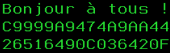
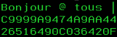
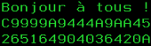
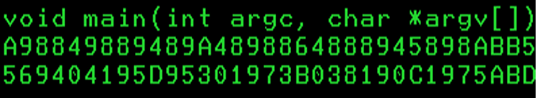
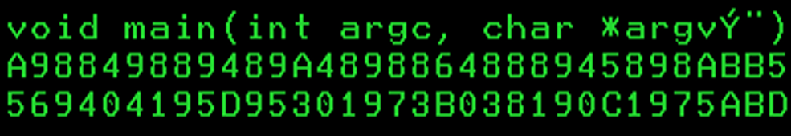
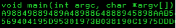
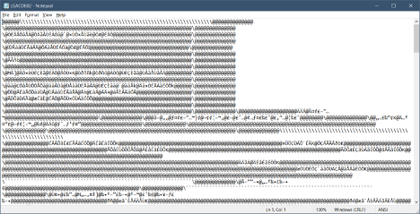
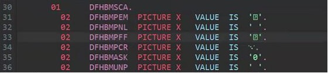
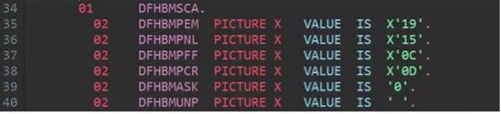

Managing code page conversion
Introduction
Choosing Git to host enterprise-level software assets implies a migration task of the z/OS artifacts. Whether the source code is under the control of a legacy SCM solution or not, these artifacts are typically stored as members within partitioned data sets (PDSs) with a specific encoding. Depending on locale, country languages, regulations or work habits, the encoding of the source code can differ by various specificities such as accents, locale typography and characters. To support these peculiarities, many different EBCDIC code pages were developed in z/OS and are now widely used.
In the Git world, the standard prevailing encoding is UTF-8, which supports most (if not all) of the characters used in printing worldwide. When migrating artifacts from z/OS to Git, a translation must occur to convert the EBCDIC-encoded content of source files to UTF-8. This process is transparent to the user, whereby the translation is performed by the Rocket Git client, as long as the necessary information on how to perform the conversion is provided. Git uses a specific file called .gitattributes to describe and dictate the translation behavior. This page contains details on the encoding that should be used when hosting the artifacts on z/OS or on Git repositories.
This page will highlight some specific migration situations and some cautionary commentary that must be taken into account in order to ensure a successful migration of z/OS artifacts to Git. The purpose of this document is not to cover all the country-related specificities, nor the complex encodings found worldwide. Rather it is aimed at presenting general use cases and how to prevent/circumvent potential pitfalls.
Understanding the code page translation process
Code page translation has always been a challenge since z/OS is exchanging data with the distributed systems. To completely understand the effect of encoding, it is important to take a step back and analyze the binary content of files. This analysis will help to better visualize the transformation process that is occurring behind the scenes
Looking inside a file
A file itself can be summarized as being a series of bytes, often expressed in the hexadecimal notation (from x’00’ to x’FF’). This file can represent binary content which is not meant to be human-readable (like an executable file), or text content. For the latter and from a user standpoint, this series of bytes doesn’t mean anything if the content is not associated with a code page, which will link each byte to a printable character (or a control character). Printable characters are the formation of a character set.
The combination of the contents of a file and the code page used defines the human-readable content. That said, the contents of a file will be displayed slightly differently when combined with different code pages. Let’s explore a couple of examples using the ISPF Editor with the “HEX VERT” option enabled to show the hexadecimal values of a file.
Consider the following example where a file containing the French sentence “Bonjour à tous !” (which translates to “Hello everyone!”) is displayed with two different code pages. The file which contains this sentence was saved using IBM-1147 encoding. When the file is then displayed using a different encoding of IBM-1047, although the contents of the file is the same from a binary standpoint, some characters are displayed in a different way:
Using the IBM-1147 code page:

Using the IBM-1147 code page Using the IBM-1047 code page:

Using the IBM-1047 code page
To be correctly displayed with the IBM-1047 code page, the contents of this file must be transformed. Please note how the hexadecimal codes for the à and the ! characters changed, respectively from x’7C’ to x’44’ and from x’4F’ to x’5A’:
Transforming to the IBM-1047 code page:

Transforming to the IBM-1047 code page
It is important to understand that the code page plays a determining role not only when displaying a file, but also when editing it. To ensure the content of a file is consistent when used by different people, the code page used for editing and displaying will likely be the same for all the users. If Alice edits a file with the IBM-1147 code page and introduces characters (like accents) specific to that code page, then Bob will need to use the IBM-1147 code page to display the content of this file. Otherwise, he may experience the situation depicted earlier, where accents are not displayed correctly. If Bob uses the IBM-1047 code page to edit the file and change the content to replace the special characters by the corresponding accents, then Alice will not be able to display the content of this file like she entered it on her terminal.
Consider this next example. A program file, such as C/370, employs the left ([) and right (]) brackets in some of the language statement constructs. In many US-based legacy applications, the original encoding used to create source files was IBM-037. If these files are then displayed using a different encoding of IBM-1047, again, although the content of the files is the same from a binary standpoint, the brackets are not displayed the correct way:
Using the IBM-037 code page:

Using the IBM-1147 code page Using the IBM-1047 code page:

Using the IBM-1047 code page
To be correctly displayed with the IBM-1047 code page, the contents of this file must be transformed. The hexadecimal codes for the [ and the ] characters must be changed from x’BA’ and x’BB’ to x’AD’ and x’BD’, respectively:
Transforming to the IBM-1047 code page:

Transforming to the IBM-1047 code page
Again, it is very important that anyone and everyone who displays or edits the file uses a consistent code page. This can sometimes be a challenge, as the code page to be used is generally specified in the 3270 Emulator (TN3270) client session set-up. Another challenge is trying to determine the original encoding used to create the file.
To summarize, the binary content of a file must be transformed to ensure consistency when displayed with another code page. This process is known as the code page translation and is key when migrating your source from your z/OS platform to a distributed platform, which is using different code pages (and most likely today, UTF-8).
Vocabulary
In this document, we will interchangeably use the coded character set ID (CCSID), its equivalent name, and the code page to designate an encoding. Although not strictly equivalent, they are all often interchanged for the sake of convenience. For instance, the IBM-1047 code page is equivalent to the 1047 coded character set (CCSID) and is usually named IBM-1047. The code page for IBM-037 is equivalent to coded character set (CCSID) 037 and is usually named IBM-037. The CCSID for UTF-8 is 1208 and is linked with many code pages.
To simplify, the code pages will be designated by their common name, for instance IBM-037, IBM-1047, IBM-1147, and UTF-8.
For reference, a list of code pages is available in the Personal Communications documentation site.
The challenge of migrating to UTF-8
If you have ever tried transferring a z/OS data set to a distributed machine running a traditional operating system (like Microsoft Windows or Linux), you probably ended up with similar content when opening the file:

The content is unreadable because the transfer was performed without a code page conversion. This generally happens when the file was transferred as binary, which leaves the content of the file untouched. Most of the transfer utilities offer the capability to transfer the files as binary or as text. In the latter option, code page conversion occurs, and the file should be readable on distributed platforms.
The same conversion must be performed for text files when migrating to Git. Generally, Git uses the UTF-8 code page and, as such, a translation must occur on the content of the transferred files. Likewise, when bringing the files back from Git to z/OS, a backward conversion must be performed to ensure the files are correctly read with the code page in use. Failure in performing this conversion may break the contents of the files, which could become damaged and unreadable. Recovering from this failure is difficult, and the best solution is usually to restart the conversion all over again from the beginning, which often means deleting the files in Git and transferring the same files from z/OS again.
Managing non-printable and non-roundtripable characters
In the traditional EBCDIC code pages, some characters exist to control the different devices themselves or the way text should be displayed. These characters are located in the first 64 positions of the EBCDIC characters tables and can be classified into 2 categories: the non-printable characters and the non-roundtripable characters.
- Non-printable characters: These characters can be translated from EBCDIC to UTF-8 and back to EBCDIC without breaking the content of the file. However, editing files which contain these characters with editing tools on a distributed platform, can cause display issues. Non-printable characters include all EBCDIC characters below 0x40.
- Non-roundtripable characters: The translation is still possible from EBCDIC to UTF-8, but the translation back to EBCDIC is not possible. In this case, the translated file is no longer identical to its original version. This specific situation must be considered and managed prior to the migration to Git. For these special characters, the conversion from EBCDIC to UTF-8 is generally feasible, but the resulting content of the files may be scrambled or displayed in a wrong way. Moreover, when transferring the files back to z/OS, the files could be damaged, and the transfer could even fail. Non-roundtripable characters include the following:
- EBCDIC
- Newline: 0x15
- Carriage return: 0x0D
- Line feed: 0x25
- SHIFT_IN/SHIFT_OUT: 0x0F & 0x0E
- EBCDIC
In a migration process, when either non-printable or non-roundtripable characters are found, two options are presented:
- Keep these characters “as-is” with the risk of damaging the source files.
- Modify the characters to a conversion-friendly format.
For the first option, it is possible to keep the content of the files intact, but the cost of this is to manage the file as a binary artifact in Git. The benefit of this configuration is that the content of the file is not altered by Git when the file is transferred. Because it is flagged as binary, the contents are not converted to UTF-8 and remain the same across the entire workflow (that is, from z/OS PDS to Git to z/OS PDS). The major drawback of this method is that the modification of these binary files with a distributed platform tool, such as an integrated development environment (IDE) or Notepad, will be extremely difficult. As these files were not converted to UTF-8, their contents will still be in EBCDIC, which is rarely supported outside of the z/OS platform. Browsing or editing the content of these files would require to bring them back to the z/OS platform. Still, this option could be a valid strategy for files that rarely (or never) change, but this implies setting up a strategy when a modification is required (that is, these files will need to be modified on z/OS, not using a distributed solution - this strategy should remain as an exception).
The alternative is to opt for a transformation of the content that contains non-printable or non-roundtripable characters before migrating the files. Programmers have often employed elaborate strategies based on the use of these characters in literals or constants. Through the ISPF editor, developers have been able to insert hexadecimal values (when enabling the editing of raw data with the hex on feature) in their source code. This use case is very common and can easily be corrected by replacing the hexadecimal coded characters with their corresponding hexadecimal values as shown in the picture below (taken from a CICS COBOL copybook):
Initial values:

Initial values Final values after transformation:

Final values after transformation
This transformation could even be automated (albeit cautiously) through scripting. Other use cases for these characters should be analyzed carefully, and developers should be encouraged to write their source code in a way that allows for code page conversion.
Fortunately, IBM Dependency Based Build (DBB) provides a feature in its migration script to detect these special characters and helps manage their code page conversion or their transfer as binary.
In any case, the decision about using binary-tagged files in Git, refactoring these files to transform the non-printable and non-roundtripable characters into their hex values, or not changing the content of the files should be taken prior to performing the final migration from datasets to Git repositories. If the migration is started with files that contain either non-printable or non-roundtripable characters, there is a high risk that files cannot be edited using distributed editors. Once the files are migrated, it is often very difficult to resolve the situation after the fact, as there can be information lost during the code page conversion. In that situation, the best option is to restart the migration from datasets, assuming the original members are still available until the migration is validated.
Defining the code page of files in Git
Since Git is a distributed system, each member of this “network” should be able to work with the files stored in the Git repositories. Over the last decade, Git has become the de facto standard for the development community, being used in all-sized enterprises, internal, open-source and/or personal development projects. Because Git emerged in the distributed world, it was first designed to support technologies from this ecosystem, and it all started with the file encoding. Although it appeared in the 90’s, UTF-8 only gained notoriety in the 2010’s through the increased interconnectivity between heterogeneous systems. UTF-8 is now recognized as the universal, common language for exchanging data and files. Naturally, UTF-8 also became the standard for encoding source files for the distributed world.
Since mainframe source resides on the host side under the control of a Source Code Management solution, this source is encoded with an EBCDIC code page and could potentially contain national characters. In order to store these source files in Git, a code page conversion must occur between the z/OS source file EBCDIC code page and UTF-8. This is the role of the Rocket Git client on z/OS to perform that conversion, which is transparent for the developers.
However, the Rocket Git client on z/OS must be instructed on the conversion operation to perform. These instructions are defined in a specific file that belongs to the Git repository. The .gitattributes file is a standard file used by Git to declare specific attributes for the Git Repository that it belongs to. With the Rocket Git client on z/OS, it has been extended to describe the code page that should be used for files when they are stored in Git and on z/OS UNIX System Services (z/OS UNIX).
The structure of the file is straightforward. One or several attributes are associated to each path and file extension listed in the file. Wildcards can be used for generic definitions. This file must be encoded in ASCII (ISO-8859-1), as it is processed by Git on z/OS and other Git platforms on the distributed side. Here is an example of such a file, which leverages two parameters: zos-working-tree-encoding and git-encoding:
# line endings
* text=auto eol=lf
# file encodings
*.cpy zos-working-tree-encoding=ibm-1047 git-encoding=utf-8
*.cbl zos-working-tree-encoding=ibm-1047 git-encoding=utf-8
*.bms zos-working-tree-encoding=ibm-1047 git-encoding=utf-8
*.pli zos-working-tree-encoding=ibm-1047 git-encoding=utf-8
*.mfs zos-working-tree-encoding=ibm-1047 git-encoding=utf-8
*.bnd zos-working-tree-encoding=ibm-1047 git-encoding=utf-8
*.lnk zos-working-tree-encoding=ibm-1047 git-encoding=utf-8
*.txt zos-working-tree-encoding=ibm-1047 git-encoding=utf-8
*.groovy zos-working-tree-encoding=ibm-1047 git-encoding=utf-8
*.sh zos-working-tree-encoding=ibm-1047 git-encoding=utf-8
*.properties zos-working-tree-encoding=ibm-1047 git-encoding=utf-8
*.asm zos-working-tree-encoding=ibm-1047 git-encoding=utf-8
*.jcl zos-working-tree-encoding=ibm-1047 git-encoding=utf-8
*.mac zos-working-tree-encoding=ibm-1047 git-encoding=utf-8
*.json zos-working-tree-encoding=utf-8 git-encoding=utf-8The zos-working-tree-encoding parameter specifies the code page used for encoding files on z/OS UNIX and in PDSs. It must be consistent with file tags for the files that are under the control of Git. The git-encoding parameter specifies the encoding for files stored in Git outside of the z/OS platform. The typical value for this parameter is UTF-8.
This file is used by the Rocket Git client to understand which conversion process must be performed when files are added to Git and when files are transferred between a Git repository and the z/OS platform. This file plays an important role in the migration process of source files from PDSs to Git repositories, and its content must be thoroughly planned.
An example for this file can be found in the dbb-zappbuild repository. This sample contains the major definitions that are typically found in the context of a migration project.
Managing the code page on z/OS UNIX System Services
During the migration of source code files from z/OS PDSs to Git, a transitional state exists as the source members are copied to z/OS Unix System Services (z/OS UNIX). This step is important and must be correctly performed to ensure the files are imported into Git in the right way.
z/OS UNIX supports the use of different code pages for the files stored on zFS filesystems. As z/OS UNIX introduced the use of ASCII in the z/OS environment, there are some concepts to understand before diving into this section. These concepts are grouped under the term “Enhanced ASCII” in the z/OS documentation.
Files on z/OS UNIX are just a sequence of bytes, like members of PDSs. When members are copied from PDSs to files on z/OS UNIX, the raw content is not altered, and the byte sequence doesn’t change. However, since z/OS UNIX can deal with files coming from distributed systems, which are often encoded in ASCII, additional parameters are introduced to facilitate the management of the file encoding.
File tagging
One of the additional parameters is the tagging of files to help determine the nature of the content. By default, files are not tagged on z/OS UNIX, and their content is assumed to be encoded in IBM-1047 by most of the z/OS utilities, unless stated otherwise. If the original content of those files is created with a different code page, some characters may not be rendered or read by programs properly.
A required step to ensure that files are correctly read and processed is to tag them. The tagging of files on z/OS UNIX is controlled by the chtag command. With chtag, you can print the current tagging information for a file (-p option, or the ls -T command also displays the tag of listed files) or change this tagging (-t/-c/-b/-m options). It is important to understand that this tagging information is then leveraged during the migration process to Git by the Rocket Git client, which uses that information to correctly convert the file to the standard Git encoding of UTF-8. Having the correct tagging set for files on z/OS UNIX is a major step in the migration process to ensure a successful conversion.
The following example shows the output of the `ls -alT`` command for a folder that contains COBOL source code:
ls -alT
total 448
drwxr-xr-x 2 USER1 OMVS 8192 Feb 22 14:47 .
drwxr-xr-x 7 USER1 OMVS 8192 Jan 12 14:06 ..
t IBM-1047 T=on -rw-r--r-- 1 USER1 OMVS 8930 Feb 22 13:04 epscmort.cbl
t IBM-1047 T=on -rw-r--r-- 1 USER1 OMVS 132337 Jan 12 14:06 epscsmrd.cbl
t IBM-1047 T=on -rw-r--r-- 1 USER1 OMVS 7919 Feb 22 13:04 epsmlist.cbl
t IBM-1047 T=on -rw-r--r-- 1 USER1 OMVS 5854 Jan 12 14:06 epsmpmt.cbl
t IBM-1047 T=on -rw-r--r-- 1 USER1 OMVS 6882 Jan 12 14:06 epsnbrvl.cblAutomatic conversion
Although not directly involved in the migration process, the Enhanced ASCII feature introduces an in-flight automatic conversion for files stored in z/OS UNIX. This automatic conversion is mainly controlled by the _BPXK_AUTOCVT environment variable or by the AUTOCVT parameter defined in a BPXPRMxx PARMLIB member. By default, programs on z/OS UNIX are operating in EBCDIC. When the _BPXK_AUTOCVT parameter is activated to either ON or ALL, along with the correct tagging of files, programs executing in z/OS UNIX can transparently and seamlessly work with ASCII files without converting them to EBCDIC.
During the migration process to Git, the .gitattributes file is used to describe the conversion format for all the files under the control of Git. To avoid any manual tasks, it is recommended to enable the automatic conversion for any thread working with Git on z/OS and the .gitattributes file. This file is discussed in further detail in the section Defining the code page of files in Git.
Other options can interfere in the automatic conversion process. Without being exhaustive, this list provides some parameters which can also influence the global behavior of tools ported to z/OS, including the Rocket Git client for z/OS:
| Parameter | Documentation |
|---|---|
| _TAG_REDIR_IN _TAG_REDIR_OUT _TAG_REDIR_ERR |
https://www-40.ibm.com/servers/resourcelink/svc00100.nsf/pages/zosV2R4SA232280/$file/bpxa500_v2r4.pdf |
| FILETAG | https://www.ibm.com/docs/en/zos/2.3.0?topic=options-filetag-cc-only |
These parameters can affect the overall behavior of the z/OS UNIX environment, so they should be configured with caution. Detailing the impacts of these parameters is outside the scope of this document. For more information on how they can affect your configuration, please reference the above documentation. Additionally, the recommended values for these parameters are described in the DBB configuration documentation page.
Using the DBB Migration Tool
IBM® Dependency Based Build (DBB) provides a migration tool to help facilitate the copying of source artifacts to Git from your z/OS development software configuration management (SCM). This tool can be used to copy the source code contained in your z/OS partitioned data sets (PDSs) to a local Git repository on z/OS UNIX that will later be committed and pushed to a distributed Git server. The DBB Migration Tool has built-in functionality that automates the detection of non-printable and non-roundtripable characters, copies the files to z/OS UNIX, tags them on z/OS UNIX, and generates a .gitattributes file. More information on the DBB Migration Tool and its usage in common migration scenarios can be found in DBB Migration Tool.
Summary
This document highlighted some pitfalls to avoid when migrating source code from z/OS PDSs to Git: correctly determining the original code page used when editing and reading source code members in z/OS is a key activity to ensure a smooth migration of these elements to Git. The second aspect is about managing the specific EBCDIC characters which are not easily converted to their UTF-8 counterparts. For these specific characters, known as non-printable and non-roundtripable characters, a decision must be taken to either refactor the source code to eliminate those characters, or transfer the files as binary. Both options have drawbacks that should be evaluated prior to the final migration to Git, as there is no easy way back.
The DBB Migration Tool shipped with IBM Dependency Based Build helps perform this migration activity by automating the detection of non-printable and non-roundtripable characters, copying the files to z/OS UNIX, tagging them on z/OS UNIX, and generating a .gitattributes file. You can learn more about this utility in DBB Migration Tool.
Resources
This page contains reformatted excerpts from Managing the code page conversion when migrating z/OS source files to Git.